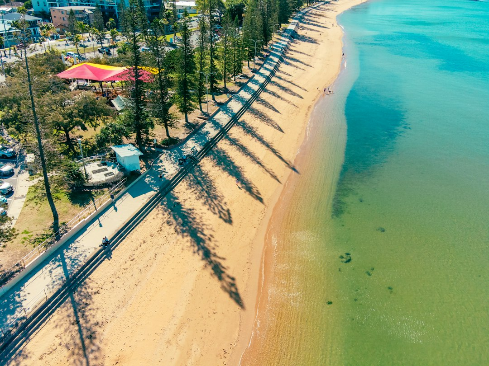

A Brisbane retaining wall decision usually turns on three measured facts: height, length and what sits above the retained ground. The source page says building approval can be triggered by total height over 1.0 metre, any surcharge load, proximity within 1.5 metres of a structure, pool barrier use, or a wall plus fence reaching 2.0 metres or more. Cost comparison should start with face area, not lineal length.
For homeowners comparing retaining walls brisbane options, the useful starting point is not the finish, but the site load, drainage path, access and approval trigger.
Retaining Walls Brisbane Explained
Retaining Wall Brisbane frames the early decision around two practical questions: how high the wall has to be, and whether anything sits on the ground above it. That is a useful order because a low garden edge, a replacement wall below a driveway and a taller engineered structure are not just different finishes. They ask different questions about load, drainage, excavation and approval.
The page also makes clear that Brisbane blocks often include some fall, and that many existing walls are older structures holding previous cuts. For a homeowner, that means the quote conversation should begin with measurements and context rather than a preferred product photo. Height, length, access, retained fill, nearby structures and drainage outlet are the details that help a contractor judge whether timber, concrete sleeper, block, stone or gabion is realistic.
Material Choice Follows Load And Access
Concrete sleeper walls are described as steel-reinforced planks set between galvanised posts, commonly used on cut-and-fill blocks and as replacements when timber gives out. Timber sleeper walls are presented as suitable for low garden terraces, low boundary retaining and stepped beds. Core-filled block is positioned for taller engineered loads and rendered finishes, while sandstone, boulder and gabion walls suit larger or steeper sites where a free-draining finish is part of the appeal.
The practical comparison is less about which material is best in the abstract and more about what the site lets the builder do. A narrow side access may affect excavation and post installation. A wall carrying a driveway, pool area, building or second wall behind it is a different proposition from a planting terrace. Drainage is not an optional add-on in the source guidance: agi drain, gravel and geofabric are named as structural details behind the wall, connected to approved stormwater.
Readers comparing contractor language can also use the companion guide to retaining wall builders in Brisbane to think about the builder selection side of the same job.
Approval Triggers To Check Before Quoting
The source page cautions that the familiar shorthand, over a metre needs approval, is only part of the Queensland approval question. It says a wall avoids building approval only if it clears every listed condition under the Building Regulation 2021 and Queensland Development Code framing used on the page.
- Total height over 1.0 metre is a trigger, measured with retained fill or cut above natural ground level, not only the visible face.
- Any surcharge load can matter at any height, including a driveway, building, pool or second wall in the zone behind the wall.
- A wall within 1.5 metres of a structure can need approval because the structures interact.
- If the wall forms part of a pool barrier, it is assessed with that barrier context.
- A wall plus fence reaching 2.0 metres or more can meet the combined-height trigger.
Approval and licensing are described as separate questions. Building approval depends on the physical triggers. QBCC licensing depends on the dollar value of the work. Where approval applies, the source page says the wall is generally designed to AS 4678 by an RPEQ engineer and certified on a Form 15.
Who This Applies To
This guidance is most useful for Brisbane owners dealing with sloped blocks, leaning walls, replacement timber walls, low garden terraces, boundary retaining, creek-margin sites or walls near a driveway, pool, building or another wall. It also applies when the yard has never been usable because the fall of the block has not been properly retained.
For a simple garden terrace, the checklist may stay modest: height, length, timber suitability, drainage path and access. For a wall carrying a surcharge or sitting near another structure, the better question is whether the design needs engineering and approval before pricing is meaningful. In either case, the homeowner should describe what sits above the wall, not only the wall face itself.
Quote Inputs That Change The Number
The source page says retaining walls are priced on face area, height multiplied by length, rather than lineal metres alone. That means two walls with the same length can be very different jobs if one is much taller. A quote that ignores height, retained load or drainage is missing information that can change the scope.
Before asking for a written price, prepare the following:
- Approximate wall height and length.
- Whether the wall is new, leaning, bulging, cracked, rotted or a replacement.
- What sits above the retained ground, such as a driveway, building, pool area or another wall.
- Whether a fence sits on top of or near the wall.
- Where stormwater can be lawfully discharged.
- Photos showing access for excavation and materials.
Those inputs help separate a low landscape wall from engineered retaining wall construction, retaining wall repairs and replacements, or a drainage and subsoil system job.
- Measure the wall face. Record the approximate height and length because the source page says pricing is based on face area.
- Identify surcharge. Note any driveway, building, pool or second wall above the retained ground before asking for a quote.
- Check approval triggers. Compare the site against the listed height, proximity, pool barrier and combined wall plus fence triggers.
- Describe drainage. Ask how agi drain, gravel, geofabric and stormwater connection will be handled behind the wall.
- Match material to site. Choose the finish after load, access, approval and drainage questions have been answered.
| Option | Best fit from the source guidance | Questions to ask before quoting |
|---|---|---|
| Concrete sleeper | Cut-and-fill blocks and timber wall replacement | What is the height, post access and drainage outlet? |
| Timber sleeper | Low garden terraces and stepped beds | Is the wall low enough for this material and use? |
| Core-filled block | Taller engineered loads and rendered finishes | Is engineering, approval or surcharge design involved? |
| Stone, boulder or gabion | Larger, steeper or free-draining sites | Is access suitable for excavation and rock placement? |
Common questions
Does every Brisbane retaining wall over one metre need approval? The source page says total height over 1.0 metre is one trigger, but it is not the only one. Surcharge, proximity to structures, pool barrier use and combined wall plus fence height can also matter.
Why can two retaining wall quotes be far apart? The source page says walls are priced on face area, not just lineal metres. Height, surcharge, access, drainage, material and approval needs can all change the work included.
Is drainage part of the retaining wall or a separate extra? The published guidance treats drainage as structural. It names agi drain, gravel and geofabric behind the wall, connected to approved stormwater.
When should engineering be discussed? Engineering should be raised when the wall has approval triggers, carries surcharge, is taller, or is close to another structure. The source page says approved walls are generally designed to AS 4678 by an RPEQ engineer with Form 15 certification.
This guide covers Brisbane retaining wall planning, materials, approval triggers, drainage and quote preparation for residential sloped-block projects.